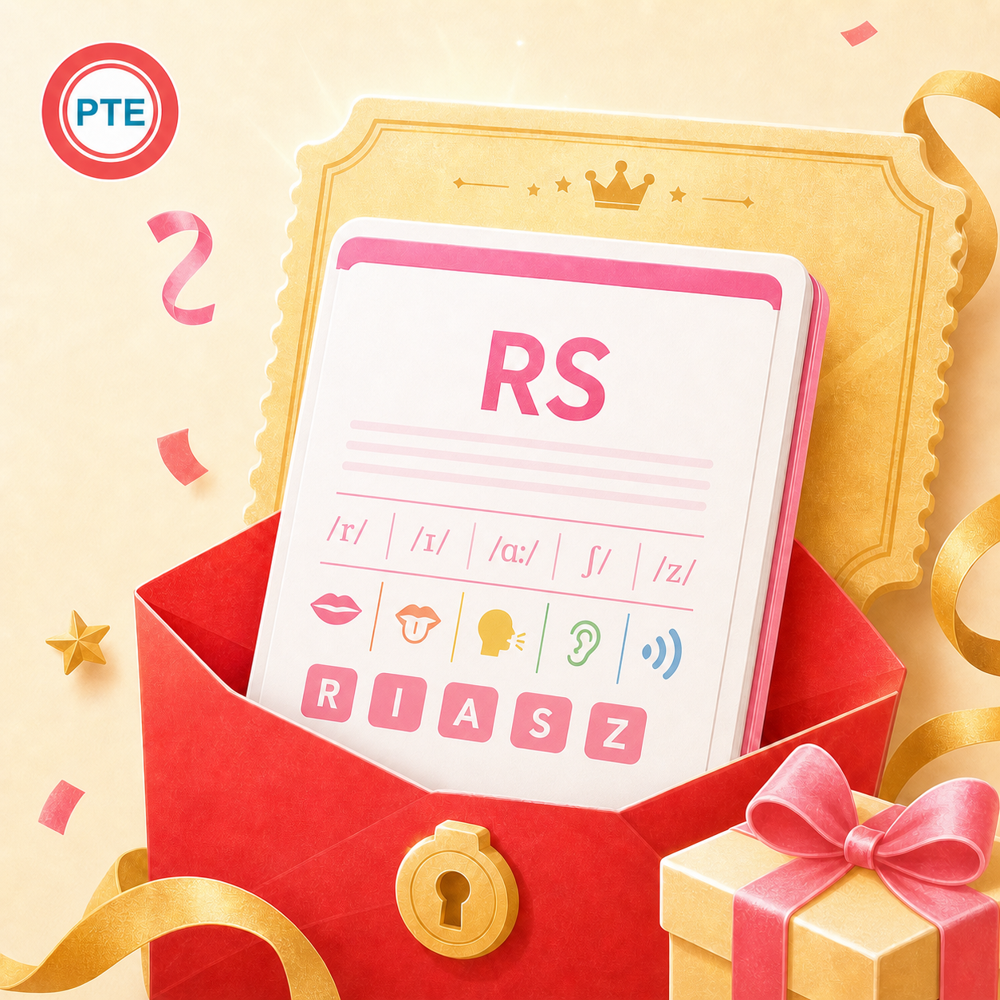

信息一闪而过，要快速捕捉重音词、语块和句子节奏。
小圆 PTE 突击认真整理每一个得分点
RS 专项Repeat Sentence · 复述句子
恭喜宝宝，找到 RS 复述搭子！
句子听完就忘？开口只剩几个词？这份资料把原句、音标、中文、图标分段和首字母提示排在一起，帮你把声音切成可记忆的意群，再连贯地说出来。
纯 PDF 图文完整原句音标 + 翻译意群图标首字母复述

先看清这道题
听一个句子，
马上用自己的声音重复出来。
RS 同时考查听力与口语。音频只播放一次，结束后麦克风打开，需要立即、清楚地复述；保持自然语速和连贯节奏，通常比为了追求每个词而频繁停顿更稳。
提示音后立即开口，在录音结束前清楚说完。
既要记住内容，也要让发音和流利度保持可理解。
真实截图
RS 资料内页展示
原句、音标、翻译、意群分段与首字母提示的实际图文排版。

本商品仅提供 PDF 图文资料，不包含音频、视频、录音或跟读服务。
资料长这样
长句切成块，
记忆就有落脚点。
参考商品资料页：每句提供原句、音标、中文翻译，再用图标和竖线标出意群，最后用首字母做主动复述。
A computer virus destroyed all my files.
原句 + 音标 先对齐声音与文字
中文翻译 一个计算机病毒摧毁了我所有的文件。
图标分段 💻 computer virus ｜ 🔥 destroyed ｜ 📁 all my files
首字母提示 A c v d a m f
- 听音标辅助精听
发现连读、弱读和容易误听的声音。 - 切按意群而非逐词记
工作记忆压力更小，复述更连贯。 - 连图标连接句意
用画面记住动作和对象，减少无意义背诵。 - 说首字母触发复述
逐步减少提示，训练开口时的主动提取。
为什么适合突击
不是反复看句子，是反复完成“听到—记住—说出”。
把长句切成 2–4 个语块，优先保住句子骨架和关键词。
音标帮助定位读音问题，避免错误发音被反复强化。
首字母提示比直接盯着原句更接近考场真实回忆动作。
建议这样冲
每天短时多轮，让嘴巴形成节奏。
热身
看原句朗读 2–3 遍
先把重音、停顿和节奏说顺，不急着完全脱稿。
强化
只看图标和首字母复述
卡住时先保留语块和关键词，尽量持续输出。
模拟
看一眼后闭屏限时复述
完成后自查停顿、漏词和不清楚的发音，再回看原句修正。
购买后如何领取
安全验证，生成你的专属 PDF。
购买后进入 RS 领取链接，系统按商品入口生成专属文件。
填写中国大陆手机号
获取并输入短信验证码，确认是你本人领取。
填写小红书订单号
订单号格式为 P 开头加 18 位数字，请从订单详情复制。
生成专属水印文件
系统为资料每一页加入完整手机号与“祝考试好运 UPUP”水印。
下载并及时保存
生成成功页会显示具体北京时间，建议在生成后 14 天内完成下载。
为生成和保护你的专属资料，系统会保存手机号和订单号，并在资料每一页添加完整手机号水印。题库按当前资料版本整理，实际考试题目以考场为准。
多说一遍，
考场就多稳一点。
如果觉得有用，就拿下吧！早用一天，多背亿点！有任何问题欢迎联系小圆——助力每个突击 PTE 的小伙伴实现梦想～
拿下 RS 宝藏资料